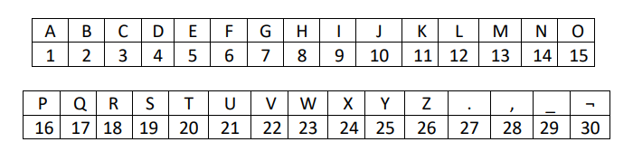

Criptografia
Algo muito útil e interessante que podemos fazer com matrizes inversas é criptografia. Apenas a pessoa que ter uma matriz chave vai conseguir decifrar a mensagem.
Para começar, vamos escolher uma palavra para criptografar e colocar em matriz conforme a tabela:

Fonte: Arquivo da professora
A mensagem escolhida é "Ola.". Precisamos fazer com que a mensagem tenha um número de caracteres par e colocar em uma matriz com 2 linhas.
Após isso, escolhemos uma matriz chave para codificar a mensagem:
Para codificar, basta multiplicarmos nossa matriz com a mensagem pela matriz chave:
Esta matriz é nossa mensagem criptografada. E para resolver, basta fazer o processo contrário, o inverso da matriz chave vezes matriz da mensagem codificada.
Primeiramente, fazer o inverso da matriz chave:
Agora, basta multiplicar o inverso da matriz chave com a matriz da mensagem codificada.
*
=
| 3*17 + 18*(-2) |
3*66 + 93*(-2) |
| -1*17 + 1*18 |
-1*66 + 1*93 |
=
E com isso, chegamos na matriz da mensagem original, que se convertermos de acordo com a tabela de antes, temos a mensagem "Olá."